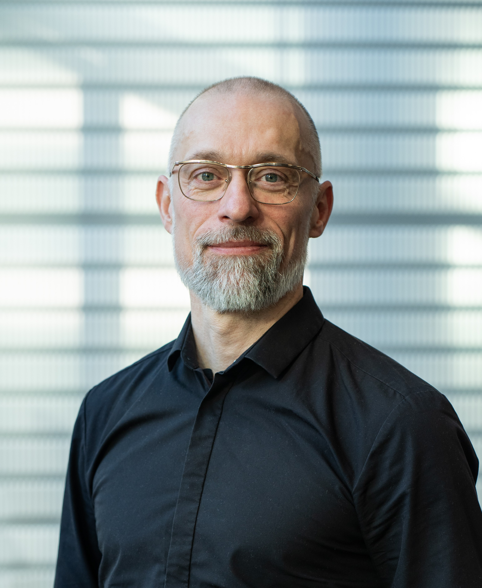

Om Enlevia
Vi hjælper ledelser med at træffe beslutninger baseret på værdi — ikke mavefornemmelse. Ikke med store IT-projekter, men ved at gøre den viden I allerede har, læsbar i den styring I allerede har.
Om os
Enlevia er grundlagt med én overbevisning: Værdi skal forklares - omkostning styre. De fleste organisationer har den viden de har brug for. Den sidder i systemerne, i medarbejdernes hoveder og i de uformelle samtaler.
Problemet er at den viden aldrig bliver gjort læsbar ved siden af de tal der styrer beslutningerne. Omkostninger flyder automatisk op til ledelsen og bliver sammenlignelige. Værdien forbliver usynlig.
Det er det vi hjælper med. Ikke ved at indføre nye systemer — men ved at bygge broer mellem den viden der allerede eksisterer og den styring der allerede kører.
København · 2025
Vores tilgang
Vi starter aldrig med at anbefale et system eller en model. Vi starter med at forstå hvad der reelt styrer organisationen i dag — og hvad der gør det svært at prioritere og eksekvere.
Det betyder at vi stiller spørgsmål der er svære at stille indefra. Vi kortlægger hvor viden om omkostning og viden om værdi lever i separate sprog der aldrig mødes — og vi designer de broer der gør dem læsbare ved siden af hinanden.
Vi identificerer systematisk hvor viden om omkostning og viden om værdi befinder sig i organisationen — og hvad der forhindrer dem i at mødes i beslutningsrummet.
Problemet er sjældent at I mangler data. Det er at den viden I har, er fanget i formater der ikke kan tales med jeres styring. Vi oversætter — vi bygger ikke nye systemer.
Vi arbejder med det der faktisk ligger på bordet. Vores forløb er korte, ledelsesnære og designet til at give konkret klarhed — ikke rapporter der samler støv.
Mød grundlæggeren
25 år med det samme problem — løst indefra

HBGrundlægger · Enlevia
Jeg har brugt 25 år på at løse det samme problem — indefra. Ikke som ekstern konsulent der kigger ind, men som den der sidder med ansvaret når strukturerne skal virke i praksis.
Hos Novo Nordisk ledede jeg governance-transformation på tværs af Digital, Data & IT i en global farmaceutisk organisation. Jeg udviklede portfolio- og prioriteringsmodeller der bandt IT-investeringer direkte til forretningsbehov og fungerede som sparringspartner for VP-ledelser.
Hos TDC NET byggede jeg det organisatoriske og datamæssige fundament der gjorde det muligt at eksekvere CO₂-strategi som målbar drift — ikke som en plan der eksisterede på papir.
Hver gang stødte jeg på den samme asymmetri: omkostninger flyder automatisk op til ledelsen og bliver sammenlignelige. Værdien gemmer sig i Teams-beskeder og i erfaringen hos de folk der aldrig kommer til orde i budgetmødet. Nu bygger jeg Enlevia på den indsigt — kombineret med forskning i hvordan datainfrastruktur former og forvrænger organisatorisk beslutningstagning.
Erfaring
Enlevia
Grundlægger & Independent Advisor
Udvikler rådgivningskoncepter inden forværdibaseret styring, governance og AI-understøttet analyse.
Novo Nordisk
Transformation Lead – IT Strategy & Transformation
Ledede governance-transformation på tværs af Digital, Data & IT. Sparringspartner for VP-ledelser i global farmaceutisk organisation.
TDC NET
Head of Agile Center of Excellence
Etablerede styrings- og prioriteringsmodel. Byggede fundament for målbar eksekvering af CO₂-strategi.
BEC · Nykredit
Independent Consultant
Designede governance- og operating models på tværs af platformteams i regulerede finansielle miljøer.
Nordea
Chief Agile Coach – Core Banking & Capital Markets
Tværgående koordinering og governance på tværs af 100+ udviklere og flere lande.
Start med en kort, uforpligtende samtale om jeres situation. Vi finder ud af om et forløb giver mening.
Send en e-mail